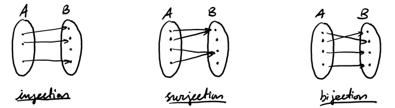

Countability
Table of Contents
The main question we want to answer is: when do two sets have the same cardinality (i.e. size)?
1. Finite Sets
Two finite sets have the same size if there is a bijection between them.
A function \(f: A \rightarrow B\) is a bijection if \(f\) is both an injection (one-to-one, i.e. \(\forall a_1, a_2 \in A ((a_1\neq a_2) \Rightarrow f(a_1) \neq f(a_2))\)) and a surjection (onto, i.e. \((\forall b \in B)(\exists a \in A)(f(a) = b)\)):

2. Infinite Sets
Two infinite sets have the same cardinality if and only if there exists a bijection between them. For example, the set of natural numbers and positive integers have the same cardinality because \(f(n) = n+1\) is a bijection between them.
More generally, a set \(S\) is countable if there exists a bijection between \(S\) and \(\mathbb{N}\), or some subset of \(\mathbb{N}\) (if \(S\) is finite). For example, any finite set is countable, as are \(\mathbb{N}, \mathbb{Z}_+, \mathbb{Z}\).
Theorem (Cantor-Schröder-Bernstein): If there exists an injection \(f: A \rightarrow B\) and an injection \(g: B \rightarrow A\), then there exists a bijection \(h: A \rightarrow B\).
Example: Cartesian product of natural numbers
We wish to prove that the set \(\mathbb{N} \times \mathbb{N}\) is countable. This can be done by finding a path that covers all the points, as each “step” on the path can be mapped to a natural number:

3. Cantor’s Diagonalization Argument
Theorem: \(\mathbb{R}\) is uncountable.
Proof: It is sufficient to prove that the reals in \([0,1]\) is also uncountable. We proceed by contradiction using diagonalization.
Suppose that \([0,1]\) is countable. Then it can be enumerated as follows:
\begin{align} f(0) &= 0.37255\dots \notag \\ f(1) &= 0.89898\dots \notag \\ f(2) &= 0.19999\dots \notag \end{align}Note that any real in \([0,1]\) can be written as an infinite decimal.
Now, look at the diagonal digits of our enumeration. Consider the number \(s\) that differs from each of these digits in the same place. Then, this number \(s\) differs from all of our existing numbers by at least one digit, which means it has not been enumerated, and we have a contradiction! Thus, we can always find a real number not in the enumeration, which means that \(\mathbb{R}\) is uncountable. \(\square\)
3.1. Power Sets
The power set of a set \(A\), denoted \(\mathcal{P}(A)\), is the set of all subsets of \(A\). If \(A\) is finite, we’ve seen that \(|\mathcal{P}(A)| = 2^{|A|}\). But what about infinite \(A\)?
Theorem: \(\mathcal{P}(\mathbb{N})\) is uncountable.
Proof: We proceed by contradiction using diagonalization. Suppose that \(\mathcal{P}(\mathbb{N})\) is countable. Then, represent any element of \(\mathcal{P}(\mathbb{N})\) as a bitstring, with \(1\) in a position denoting the existence of the element in \(\mathbb{N}\) corresponding to that position in that set:
\begin{align} f(0): \quad &101101\dots \notag \\ f(1): \quad &111111\dots \notag \\ f(2): \quad &000000\dots \notag \\ \vdots \quad &\vdots \notag \end{align}But, if we use diagonalization, we can construct a new subset of \(\mathbb{N}\) that is not in the enumeration, which means that \(\mathcal{P}(\mathbb{N})\) must be uncountable. \(\square\)